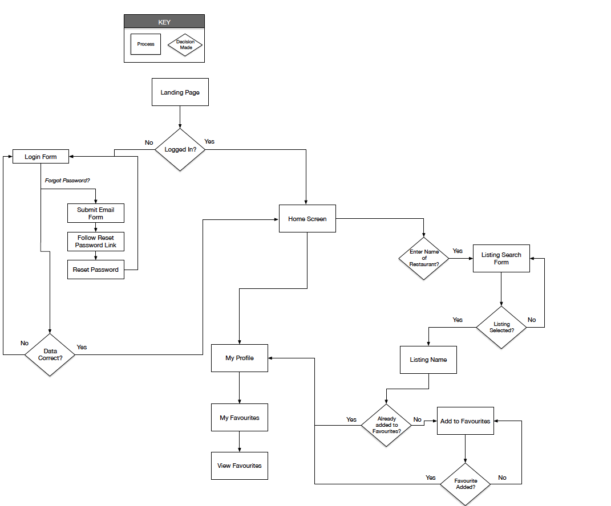

‘One Day’ is a health and wellness mobile app that aims to improve a users overall mental and physical wellbeing by cmaking positive changes to their daily habits and routines. The app will be a resource that will promote healthy eating, sleep advice, and improve mental and physical health through stress reduction methods and techniques. By using the app users will change their habits and thought processes for one day which could lead to the development of new life changing habits.
The mobile app was created following iOS guidelines for iPhone as well as a material design version for Android.
The main tools used for this project were:

There are a number of related apps on the market currently that provide similar content however my app will be different to these apps as it will encompass elements of both mental and physical health within the one app while also adopting a more simplified approach focusing on each part of a users day that they can adjust to bring about better health.
Content will be provided for a morning routine, daily commute, and evening routine to encourage new habits that promote both mental and physical wellbeing.
The requirement for the project was to design two versions for the mobile app, one for iOS and one for Android. The brief stated to create 3 user flows that detail how users will complete particular tasks in the app, taking care not to make the app too complicated as there will be two verisons designed.
"As a user I want to be able to view images and instructions of a morning stretching routine"

“As someone that has a specific dietary requirement I want to be able to find suitable food when I’m on the go so that I don’t break my diet”

“As someone that has a specific dietary requirement I want to be able to easily find a restaurant where I’ve eaten before so that I can add it to my favourites list"

The user flows formed the foundation for initial design sketches. The 'crazy 8s' rapid sketching method was used whereby an A4 sized
piece of paper is folder into 8 squares and a 60 second timelimit per square is given to sketch out initial ideas. Different iterations
of sketching were used to develop ideas for the needed screens and features. A dot vote was used to mark the best ideas from the sketches.
The dot voted designs were pooled together to create a paper prototype for the app. Prott was used to develop the interactive paper prototype.


The paper prototype was tested recruiting suitable repsondents to participate in the testing.The goal was to test teh usability of the app. I wanted to ensure that the potential users can navigate through the app and accomplish the tasks that I have set for them and also to identify any pain points or areas of tension that may need to be redesigned.
There were some useful insights that were discovered from analysing the feedback from the tests.
Apps and websites were researched online to get inspiration for the look and feel of the new proposed app. Websites such as Dribble, Behance, Pinterest and Instagram were researched along with various online design related articles. The exisiting apps were researched under the headings of 'Colour', 'Layout' and 'Type/Icons/Logos'.


A moodboard was created to demonstrate the proposed design look and feel. Two varying styles of moodboard were designed as can be viewed below. Certain ketwords were used to help project the feeling and idea behind the design styles. One style uses green as the primary colour with yellow as an accent and a ligher shade of green to support as well as shades of grey. An alternative design uses a brighter orange as the primary with bright green as an accent and supporting colours of dark green and grey. It was decided to use the first moodboard as the colour scheme for the app as it was felt that the colours were more appropriate and the alternative moodboard was possibly more suited to a fruit drink or juice bar as opposed to a health food app.

Once I had figured out the main user flow and screens for the app I created a number of sets of wireframes to give a better idea of how the information and functional elements would be laid out. These were then iterated on until I settled on a final set of wireframes which were later used as the basis for the visual design of the app. During this process my tutor and was consulted for feedback. Once the final screens were designed a style guide was also created as a reference to the Typography, Colour Scheme, UI Elements, Imagery and Icons used in the design of the app that should be followed if there are to be any amendments or additions to the app. In addition to wireframes sample responsive screens were developed for iPad and Laptop. The images below show mid to high fidelity screens that were created.


A preference test was conducted using the UsabilityHub website. A complete mockup was tested along with a variation screen to obtain user feedback. Respondents were asked to choose which button style they preferred and to also give a reason for their choice. From a group of 20 respondents the profile white screen performed better with a score of 58%. While the difference is not statistically significant respondents answered that they preferred this design style as easier to look at, it was more elegant, more organised and clearer in appearance.

The final screens were critiqued by members of the UI design course. The overall feedback was positive and any constructive feedback was taken onboard and lead to some minor adjustments in the design. The reviewers liked the design and the concept of the app. They liked the colour scheme and professional feel. They found it functional and easy to use.
"You work really really well with your colors and keep the style super consistent throughout every single screen, which I find wonderful! Your app looks professional. Actually, I feel hungry right now, so I’d use your app right away if it existed!"
"Your filter choices are really on point and relevant to refine precisely what users might be looking for."
"Your icons are really nice and make it easy to follow actions and to create a hierarchy."
"I look at this screen and I know exactly what to do, the patterns are familiar and display the functions very well."
I have studied Marketing and have also worked in Marketing Analytics so I believe this background helped me in the early phases of the project to formulate research questions and to conduct the user interviews and the development of the online survey and the user personas. Also testing a low fidelity wireframe sketch early in the process proved beneficial as it helped shape future design decisions. Online research to gather inspiration and the development of a moodboard also helped to create the final design look and feel.
User Interviewing, Usability Testing, User Surveys.
User centered design, Research learning spiral methodology, Crazy 8's design sprint.
Research design sites online, Engage with end users to discover their wants and needs. Test designs early and often.
It took me a few attempts at the crazy 8 design sprint methodology before I was able to start generating design ideas, coming up with different looks for the same screen was soemthing that was a challenge also. The user flows were an area that I found to be quite tricky and time consuming but spending time getting the user flows correct after a number of iterations helped with the design of the wireframes at a later point in the process.
Sketching, User Flows.
User centered design.
Sketch more frequently, Get more project experience for user flow diagrams.
I moved from low fidelity wireframes to high fidelity adding a lot of detail and creating finished mockups before getting additional feedback from users. The feedback from the user tests for the final screens was mostly positive, any constructive feedback was reviewed and amendments were made. In future however I need to remember to move to mid fidelity and test with users before adding additional detail as the final screens should be based on additional user feedback throughout the process.
Wireframing, Reviewing & Critiquing.
Design iteration and testing.
More testing and redesign throughout wireframe development.